Concept Dossier · AGT-3955 · Live structure canvas
Layers, backup and warnings
The seven layers with their data, encoding and legend, each captured in light and dark at 1440 px and 390 px; the inventory of stateful data of this installation, checked against the code, with the goal the system works toward; and the construction sites and warnings pinned to their nodes.
Layers
Layers are switched on and off and combine. Each owns a place so combinations do not collide: badges in the top-right corner of a node (health dot, backup shield, construction cone), metric rows at the bottom of a card in a fixed order (performance, storage, backup, version, drift), outline and soft tint for state, width, dash and particles on links. Colour stays in the accents: status colours only for states that need attention, the three work-kind colours only on moving work. A missing backup stays marked in every combination, as the owner asked.
| Layer | Data | Encoding and legend |
|---|---|---|
| Performance and network | CPU, memory, load and slots per node (host telemetry); link state, latency and traffic (link supervisor, host counters). | Gauges in each card; amber from 75 %, red from 90 %. Link width and particle density follow traffic; dash pattern names the link type; latency on the link. |
| Storage | Volumes and mounts per machine with size, used, free and growth (host filesystems, telemetry history). | A volume bar under each machine header split by mount; amber below 30 GB or 15 % free, red below 8 GB or 5 %; days until full from the growth trend. |
| Backup | Every stateful data location with its class, its copies, the last successful copy and the recovery point (/api/operator/backups, data locations). | A shield per node: red cross for a must-keep location without an off-host copy, amber for a local copy only, green tick for a verified off-host copy, outline for reproducible, faint for cache. Copy links to the git remote and the backup target. |
| Construction sites and warnings | Open problems pinned to their node: missing or behind toolchains, releases behind stable, links down, parked or refused cards, disk pressure, expiring credentials, missing backups. | A cone per node with the count, red for blocking, amber for degrading; the top problem is written beside it when there is room. The side list says what blocks and the next step. |
| Health | Observed health per node and link (host reports, probes, link supervisor). | A dot in the corner and a soft tint for degraded or down nodes; hollow dot when not observed. |
| Version | Running release per node against the stable channel; pending host installs (host releases). | A release chip; amber with the distance when behind stable. |
| Drift | Declared placement against observed state (placement file, host reports). | Dashed outline and a chip: undeclared, declared only, differs. |
Palette: the article and Studio tokens for surfaces, ink and status; the work kinds coding, gate and review use Studio blue 500, orange 500 (600 in dark) and violet 700. Run through the dataviz validator for all pairs, because any two can meet on the canvas: light passes every check (worst CVD ΔE 10.9, normal vision 18.7); dark passes with violet below 3:1 contrast, which the method allows with visible labels: every token carries its card and step as text, and the event log repeats it.


capture.mjs, 1440 px, only this layer on.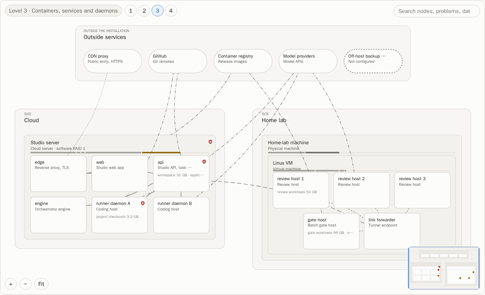

capture.mjs, 1440 px, only this layer on.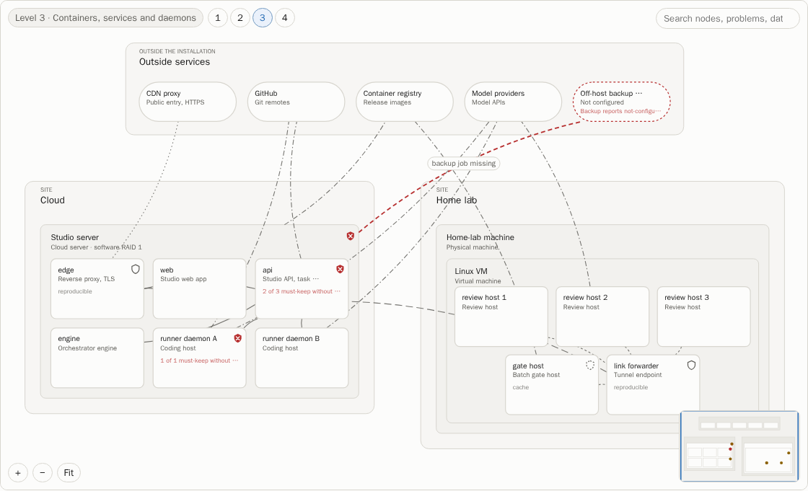

capture.mjs, 1440 px, only this layer on.

capture.mjs, 1440 px, only this layer on.
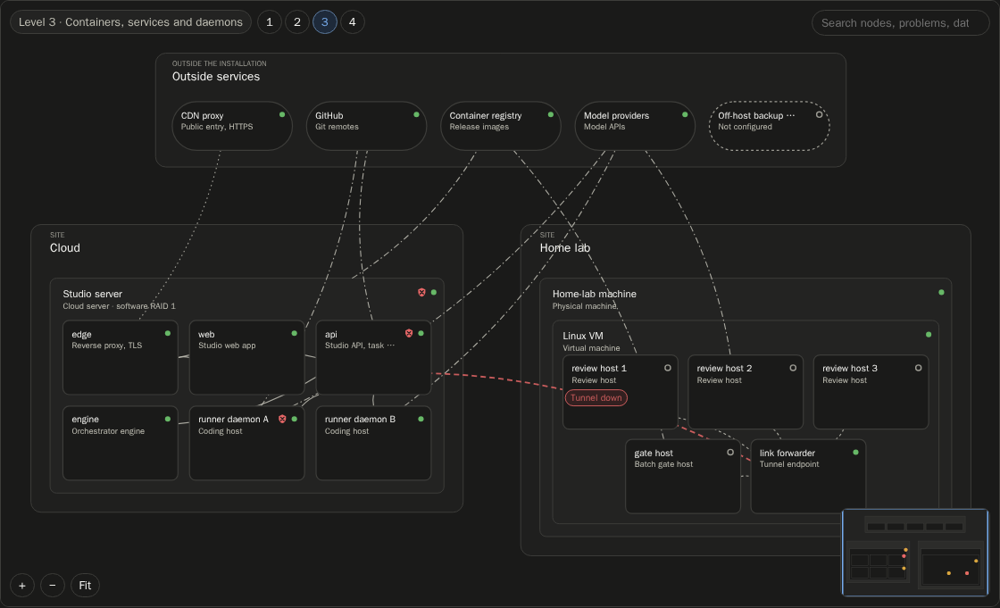
capture.mjs, 1440 px, only this layer on.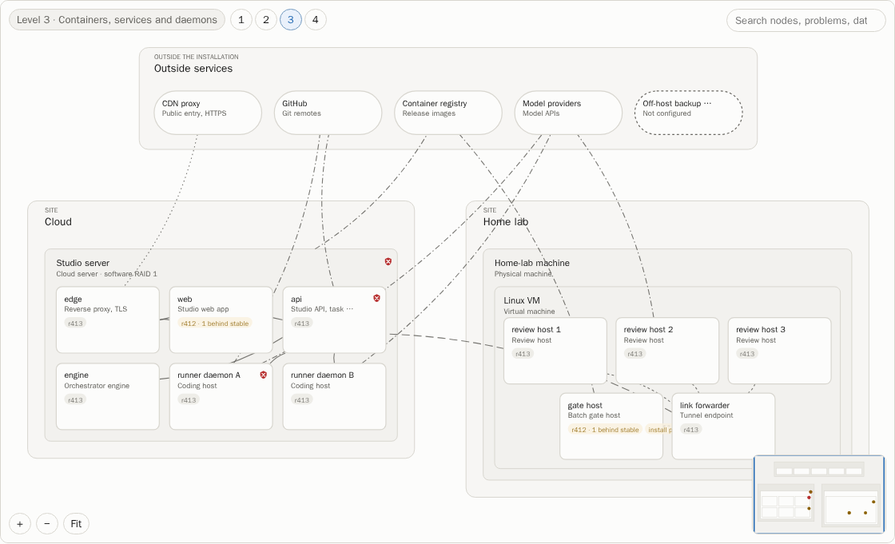
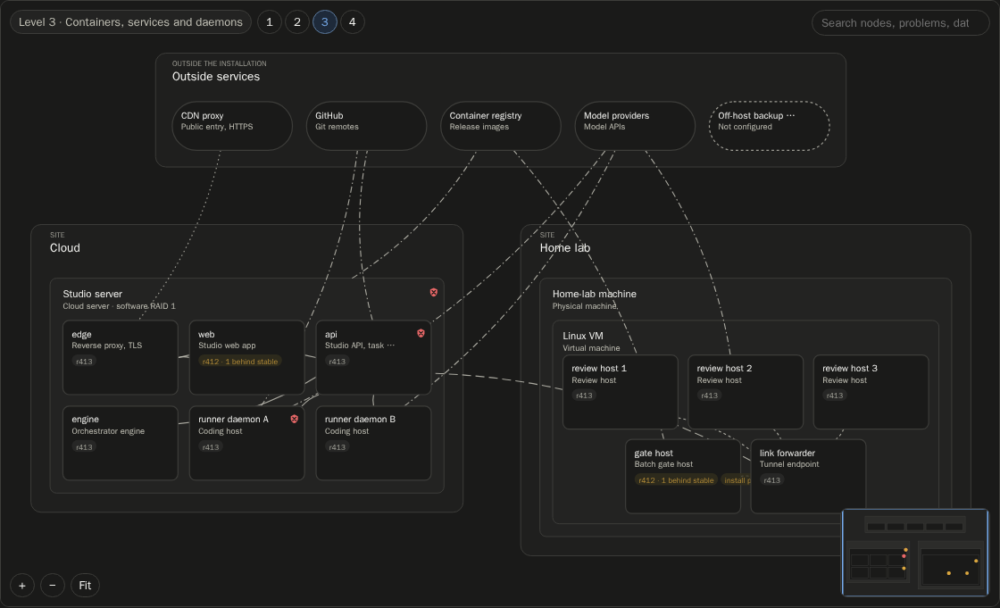
capture.mjs, 1440 px, only this layer on.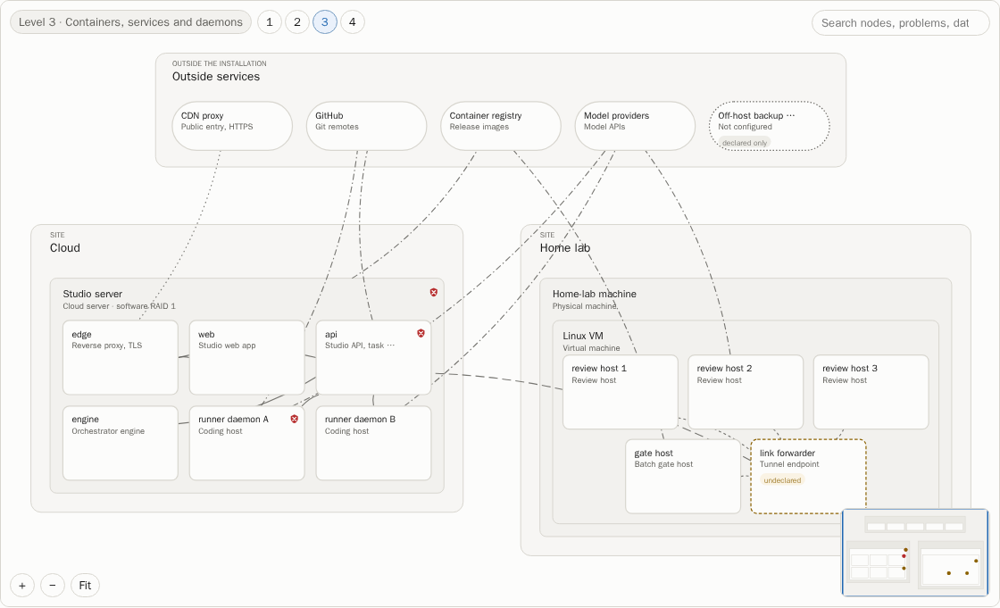
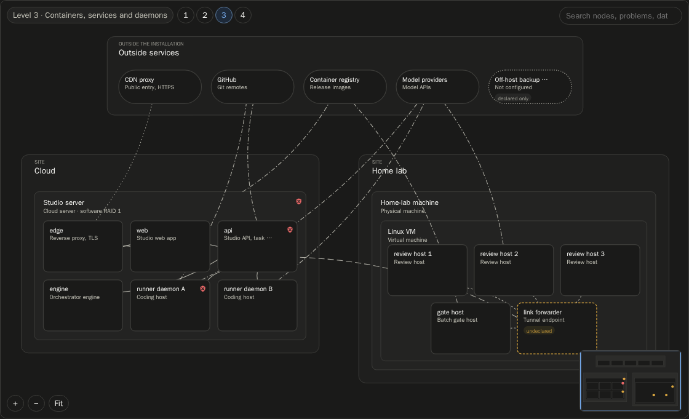
capture.mjs, 1440 px, only this layer on.


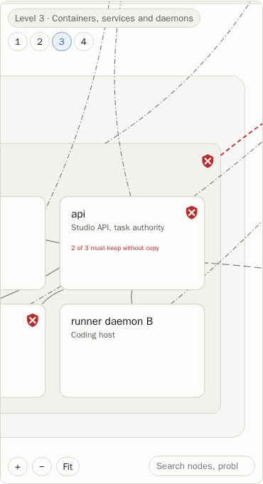
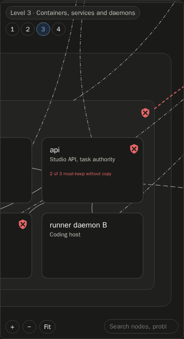
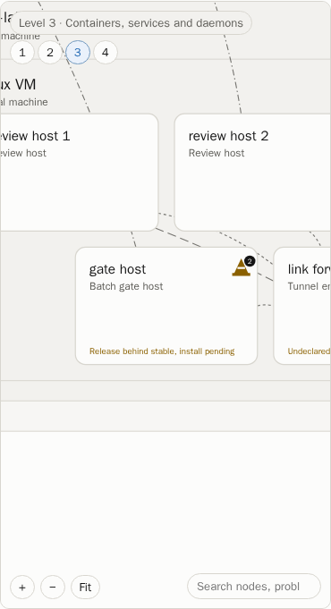
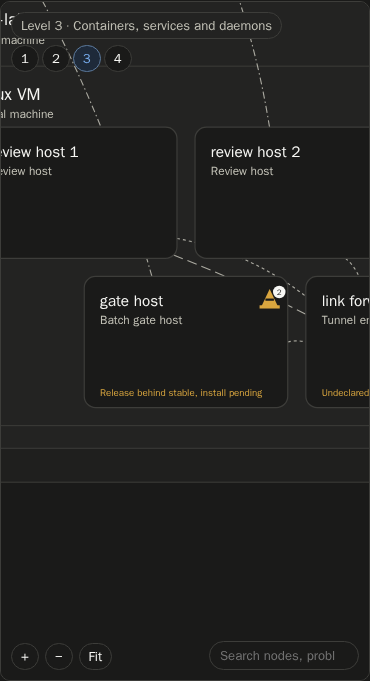
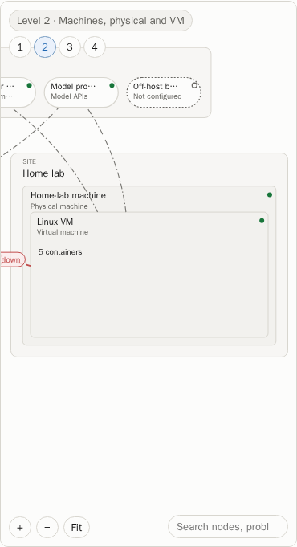
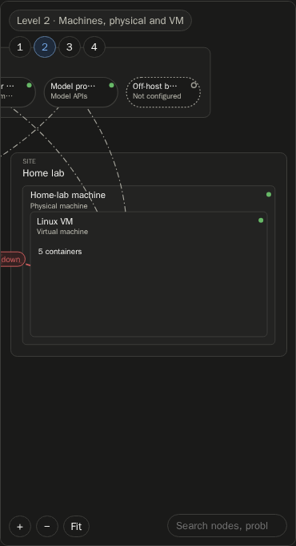
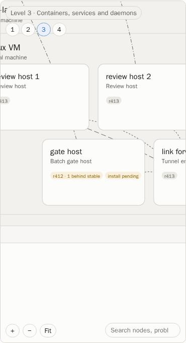


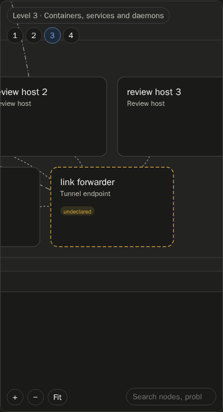
capture.mjs.Backup
Every stateful location is classified as must back up, must escrow (keys that are never inside a backup by design), reproducible or cache, with its copies, the last successful copy and the recovery point. The inventory below was checked against the code: SecurityStorePathPolicy keeps .security/ out of every commit, the workspace lifecycle never stages the attempt authority, KeyEncryptionKeySource and BackupCipher keep both keys outside every archive, and BackupCheckouts bundles local refs because checkouts are otherwise re-cloned.
| Data location | Where | Size | Class | Copies today | Recovery point | Evidence |
|---|---|---|---|---|---|---|
| Workspace repository, committed part Task folders, receipts, reviews, prompts | api | 31 GB | Must back up | git remote, last push 21:38 | minutes | workspace-repository-lifecycle.md |
| Workspace local state, not in git .security (users, IAM, sessions, API tokens, sealed secrets) and attempt authority | api | size not reported | Must back up | none | none | SecurityStorePathPolicy.cs, workspace-repository-lifecycle.md |
| Application state directory Batch gate store and leases, gate ledger, attempt records, ledgers, settings | api | 3.0 GB | Must back up | manual snapshot 2026-11-09, same disk | 8 days, same disk | studio-backup-restore.md |
| Secret store key Never in any backup by design; needs an escrowed copy | Studio server | under 1 MB | Must escrow | none | none | KeyEncryptionKeySource.cs, studio-backup-restore.md |
| Backup key Not created: the backup feature reports not-configured | Studio server | under 1 MB | Must escrow | none | none | BackupCipher.cs, /api/operator/backups |
| CLI logins and SSH keys Data home of the runner daemons | runner daemon A | 102 MB | Must back up | none | none | BackupCredentialInventory.cs |
| Project checkouts Re-cloned from origin; local refs need a git bundle | runner daemon A | 3.0 GB | Reproducible | project remotes | rebuild | BackupCheckouts.cs |
| Edge certificates and ACME account Re-issued by ACME; archived to avoid rate limits | edge | under 1 MB | Reproducible | none | rebuild | studio-backup-restore.md |
| Container images Pulled again from the registry | Studio server | 38 GB | Cache | registry | rebuild | illustrative |
| Package and preparation caches node_modules, NuGet, preparation cache, gate source mirror | runner daemon A | 9.0 GB | Cache | none | rebuild | illustrative |
| Gate and review worktrees, object cache Recreated from bundled branches and remotes | gate host | 162 GB | Cache | none | rebuild | illustrative |
| Host enrolment credentials Re-issued by re-enrolment | link forwarder | under 1 MB | Reproducible | none | rebuild | illustrative |
Finding: the git mirror covers less than it seems
"The workspace repository has a copy, its git remote" is true only for the committed part. The workspace directory also holds .security/ (users, IAM, sessions, API tokens, runner credentials, sealed secrets) and the attempt authority with its journal; both are excluded from git by design and have no copy anywhere. Together with the application state, the CLI logins and the two keys, five of six must-keep locations have no off-host copy. The one copy of the application state is a manual snapshot of 9 November on the same RAID pair: RAID 1 survives one failed disk, not deletion, corruption, a bad update or the loss of the server.
The Backup layer reads GET /api/operator/backups (state not-configured, no backup key, off-host kind none) and the data locations, draws a shield on every node that holds state, draws the git mirror as a green copy link and the missing backup job as a red dashed link to a ghost node "Off-host backup target: not configured", and shows the goal "every must-keep location has a verified off-host copy" as progress: 1 of 6 today. The persona keeps proposing the next concrete step until the goal is met: the owner decisions D7 (target) and D8 (key custody), then a card to configure the backup and verify one restore, then escrow attestations, so the view can show the date each key copy was confirmed.
Project data the Studio hosts has its own backup paths: managed databases (AGT-3878, backend/Features/Projects/ManagedDatabases/) and hosted volumes (HostedVolumeBackupService). Where an installation runs them, they appear as data locations of their run target with the copies those services report; the same classes, shields and goal apply. The installation inventory above covers the Studio's own state.
Construction sites and warnings
Every open problem is a fact from an existing API, pinned to the node it concerns, with what is wrong, what it blocks and the next step. The persona groups and ranks them; without a persona they sort by severity. A cone on the node carries the count; at level 3 the top problem is written on the card; at level 4 every problem is listed inside the service.
| Kind | Fact source today | Pinned to |
|---|---|---|
| Dependency, toolchain or CLI missing or behind | InstalledCliDto.IsBelowTarget, HeldCapabilityDto, RemoteDispatchRejection.Capability in /api/v1/management/remote-hosts | The host or container |
| Host release behind stable, pending host install | /api/v1/management/host-releases (HostReleaseDriftSnapshot), enrolments without consumption | The host |
| Link down | /api/v1/management/links (RunnerLinkResource), bus tag runner-link | Both ends; the link breaks visibly |
| Cards parked or refused because of a host | gate-environment-exhausted parks, /api/v1/management/runner-infrastructure-failures, remote-dispatch-rejected | The host that refused or failed, with the card keys |
| Disk pressure | HostDiskPressurePolicy (warning below 30 GiB or 15 % free, critical below 8 GiB or 5 %), telemetry finding disk-pressure | The machine and volume |
| Expiring credentials | CapabilityHealthDto.ExpiresAt, signal credentials-expiring, environment-certificate-expiring, /api/v1/management/credential-inventory | The host or the edge |
| Missing backups | /api/operator/backups warnings, data locations | The node holding the location |